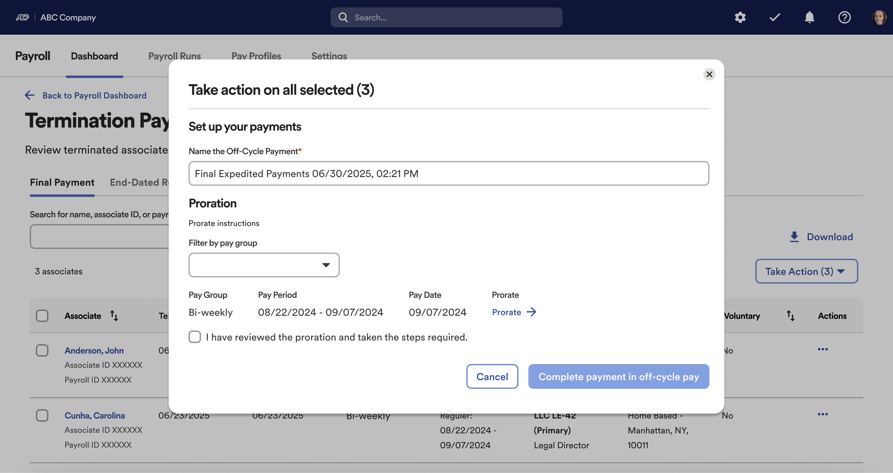

Designing a Real-Time, High-Stakes Interactive System
Termination workflow redesign / Final Payment
This project redesigned the termination and final pay experience as a real-time, high-stakes workflow system. Every action carries downstream consequences and must respond predictably under time pressure, legal constraints, and complex state dependencies. The solution improves state clarity, responsive feedback, error recovery, and throughput at scale.
System lens
- Inputs: role-based actions, bulk operations, off-cycle decisions, pay rule constraints
- States: eligible vs ineligible, immediate payout required, pending data, complete, blocked, exception
- Feedback: priority alerts, inline constraints, confirmation states, recovery paths
- Success criteria: speed, correctness, confidence, and compliance under real-world constraints
Process
- Research and discovery: Mapped practitioner workflows, identified high-risk decision points, and documented failure modes (missed alerts, hidden dependencies, manual workarounds). Prioritized issues based on frequency, severity, and downstream impact.
- Design and prototyping: Built stateful concepts and interaction patterns that define clear transitions (entry, active, blocked, error, confirmation). Iterated with user groups and enterprise clients, then refined with Product, Engineering, and Compliance to ensure fidelity through implementation.
The Challenge
- High-stakes constraints: Immediate and accurate payout is legally required in certain regions. The previous system relied on memory and manual sequencing, increasing risk and inconsistency.
- Weak state visibility: Termination-critical alerts were buried among routine tasks. Poor hierarchy and filtering made it easy to miss urgent, time-sensitive items.
- Throughput bottlenecks: No bulk actions for mass terminations. High-volume scenarios increased time-on-task, created friction, and amplified error likelihood.
- Hidden dependencies across modules: Direct deposit and benefits changes lived elsewhere and were not visible in the payroll context, creating uncertainty, rework, and support tickets.
- Limited recovery paths: The flow lacked clear guidance when users hit blocked or invalid combinations, leading to workarounds and downstream corrections.
Approach
- Dedicated system surface for urgent states: Created a focused dashboard tile (Termination Payments and Issues) that isolates urgent, high-impact tasks so critical states cannot be buried.
- Predictable, responsive feedback: Translated payout rules into discrete, high-priority alerts with clear “why” and “what’s next,” reducing interpretation and hesitation.
- State-aware pathways and recovery: Designed clear paths for common exception states (blocked, incomplete, missing dependencies) with guidance that prevents invalid sequences and supports recovery.
- Throughput and scale: Introduced bulk actions and support for off-cycle flows (group payouts, proration, off-cycle payments) to reduce repetitive work and improve speed under load.
- Centralized visibility of dependencies: Added a unified view of end-dated payroll records and direct deposit status so users can understand system state at a glance.
- Research anchored: Validated decisions through interviews, usability findings, and enterprise client feedback to confirm the system matched real-world behavior and expectations.
- Implementation partnership: Partnered closely with engineering to define component behavior, edge cases, and state transitions to maintain design intent through build and QA.

Connecting terminations directly to OCP enables immediate processing for final pay in regions where timing is legally constrained, while non-urgent cases can be routed into the standard pay cycle.

Previously, users relied on manual steps and memory for sequencing, increasing risk and inconsistencies and forcing some teams into paper checks.

The redesigned system supports clear state transitions: users can route payment through an off-cycle run or include it in the regular pay cycle, with guidance to reduce invalid choices and rework.
Impact
System outcomes
- Improved state visibility and prioritization for time-sensitive termination cases.
- Reduced manual sequencing and lowered compliance risk through clearer guidance and feedback.
- Faster processing in high-volume scenarios through bulk actions and streamlined off-cycle routing.
- Higher practitioner confidence by making dependencies and “what’s next” explicit.
Scalability and craft
- A reusable interaction pattern for urgent action items across benefits, errors, and warnings.
- A scalable approach suitable for organizations supporting 10,000+ employees.
- Deep cross-functional alignment across UX, Product, Engineering, and Compliance to maintain quality through delivery.
- A clearer foundation for future metrics tied to responsiveness, correctness, and error recovery.
The redesigned experience improves visibility, accuracy, and speed by treating termination and final pay as an interactive system with clear states, predictable feedback, and recovery paths. It aligns legal requirements with a guided workflow that scales without sacrificing clarity.
Next Steps
- Run a post-launch retrospective focused on state confusion points, recovery rates, and high-volume throughput.
- Define and publish metrics: time-to-complete, error rate, escalation volume, and confidence signals (repeat attempts, backtracks).
- Iterate on hierarchy and alert rules using production data to improve prioritization and reduce missed critical items.
- Share interaction pattern guidance across teams to expand reusable standards and improve consistency across the platform.